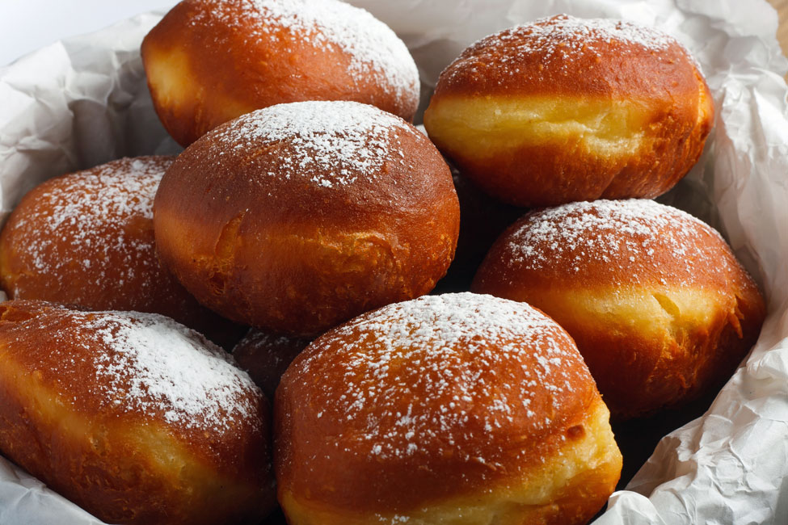

Gogoși is a donut prepared the Romanian way, made with a dough mixture that is flavored with vanilla extract and grated lemon or orange peel, then deep-fried in hot oil. It is served warm with a generous dusting of icing sugar on top and can be filled with fruit jams or chocolate.
Meal prep time : 1 hour 15 minutes
Servings : 15